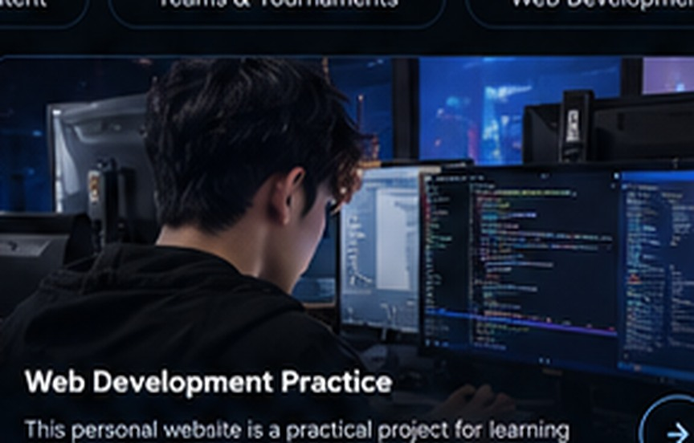

11M+TikTok Views
One video reached approximately 11 million views.
A journey built from games, creativity, and real experiences. Sharing entertaining content, competitive moments, and the process of becoming a better version of myself.
Irsyad Fadhilah Yulianto, better known as Fiy, is a content creator and former competitive Free Fire player from Cirebon, West Java. His journey in the digital world began around 2017, creating entertaining gaming content and connecting with an online community.
Through gaming, he developed an interest in teamwork, creativity, consistency, and learning new skills. Today, he is exploring web development, content production, and digital projects.
Read More About Me →One video reached approximately 11 million views.
Previously reported peak audience on TikTok.
Reported in-game ranking achievement.
Years of content creation and competitive gaming.
Short-form Free Fire content, gameplay highlights, and creative video concepts shared on TikTok.
Experience with teams including MioGhoib, AuraExcellent, SSQ, and Headless.

A practical project for learning HTML, CSS, and responsive design.
First steps in Free Fire content on TikTok.
A gaming video reached a wider audience.
Built a following through entertainment.
Joined teams and competitive events.
Reported Top 1 Indonesia achievement.
Exploring web projects and creative skills.